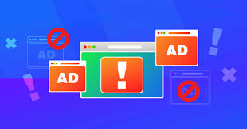

Adware, a term derived from "advertising-supported software," is software that displays advertising on a computer screen or mobile device, redirects search results to advertising websites, and collects user data for marketing purposes.
Adware is an "advertising-supported software" that displays ads on websites and collects data on a user's behavior for marketing purposes
Adware generates revenue for a company through display and pay-per-click advertising
Not all adware is malware
Antivirus software is essential to help protect a computer and its user from malicious adware.
What is Adware?
Adware is software that displays unwanted (and sometimes irritating) pop-up adverts which can appear on your computer or mobile device. Adware typically ends up on a user's device through one of two ways:
- You might install a free computer program or app without necessarily realizing that it contains additional software that contains adware. This allows the app developer to make money but means you could download adware onto your systems without necessarily consenting.
- Alternatively, there may be a vulnerability in your software or operating system which hackers exploit to insert malware, including some types of adware, into your system.

How do you get adware?
Adware normally comes in software/programmes that you download from the internet - usually freeware or shareware - and it secretly installs itself onto your device without your knowledge.
Free software which contains some ads may be annoying but is not illegal. However, if a third-party programme adds malicious ad software onto your device without your consent, then it is illegal.
How does adware work?
Adware works by installing itself quietly onto your devices, hoping you'll - accidentally or otherwise - click on an advert that it displays to you.
This is because, ultimately, adware exists to make money.
Adware creators and distributing vendors make money from third parties via either:
- Pay-per-click (PPC) - they get paid each time you open an ad.
- Pay-per-view (PPV) - they get paid each time an ad is shown to you.
- Pay-per-install (PPI) - they get paid each time bundled software is installed on a device.
Adware can also track your search and browsing history to display ads that are more relevant to you. Once the developer has your location and browser history, they can make additional income by selling that information to third parties.
At the less harmful end of the spectrum, adware is simply a nuisance. At the more harmful end, it can be a damaging malware threat to your cybersecurity.
Types of adware
It is important to distinguish between harmless and harmful adware. Adware examples include:
- Legitimate adware that allows you to consent to ads and software promos, offsetting developer costs so they can offer their software for free. Users willingly download this type of adware to get a free product. Also, you might choose to allow it to collect marketing information. Sometimes the accompanying personalized ads or sponsored third-party software can be desirable.
-
Legitimate adware is created by all types of developers, including reputable ones. It is a valid and legal way to give customers a free product.
However, not all application downloads are consensual. This is where legal boundaries become blurred.
- Potentially unwanted applications (PUAs) include any program you might not have chosen to install onto your device. These may also be called potentially unwanted programs (PUPs).
-
PUA adware can fall into a gray area, where the extent to which it is malicious or illegal depends on the goals of the software and those who distribute it:
- Legal deceptive adware PUA may actively make it tricky to opt-out of installing harmless third-party software. While frustrating, legitimate adware sometimes uses this method. It is legal if the creator has not knowingly included malware-tainted ads or software. Unfortunately, some adware might unknowingly deliver disguised malware to devices.
- Legal abusive adware PUA is designed to bombard you with ads. Excessive ads may be in adware itself or in packaged software via web browser toolbars or other means. Without any malware, this is also legal. Ads for things like pornography or fitness pills frequently appear in adware like this.
- Illegal malicious adware PUA profits from malicious third parties who want to distribute malicious software like spyware, viruses, or other malware onto devices. This malware may be intentionally masked within the adware itself, the websites it advertises, or in accompanying software. The creators and distributors knowingly spread this threat and might use abusive methods to accomplish it.
When people talk about "adware," they tend to mean the programs that abuse ads and open the door for malware.
Adware can be frustrating regardless of legality and can easily go undetected for a long time. To avoid any invasive or tedious software, you should know what to look for.
How to tell if you have an adware infection
Signs that you may be infected with unwanted adware include:
Computer adware infection signs
- An unexpected change in your web browser home page
- Web pages that you visit not displaying correctly
- Being overwhelmed with pop-up ads - sometimes even if not browsing the internet
- Slow device performance
- Device crashing
- Reduced internet speeds
- Redirected internet searches
- Random appearance of a new toolbar or browser add-on
Mobile adware infection signs
- Your phone is slow
- Apps take longer to load
- Your battery drains quickly
- Your phone has apps you don't remember downloading
- There is unexplained data usage and higher than expected phone bills
- There are numerous ad pop-ups
Some adware is aggressive - it embeds itself deep into systems with rootkits to make removal challenging. If you are infected, you'll need to take steps to clean your system of the offending applications.
Mobile adware
Adware can get onto people's mobile or cell phones through apps in popular categories like entertainment and gaming. These apps can appear harmless but, once installed, can behave maliciously.
Again, there is a spectrum from relatively harmless to far more harmful. At the harmless end, you may download an app that simply spams you with ads once it has been installed. This can be a nuisance, especially because sometimes the ads can appear from outside the app, making it hard to identify the cause.
Far more harmful is ad fraud and ad clicker software. This involves apps surreptitiously downloading executable files and running malicious activities in the background. This can include clicking on ads without users knowing or subscribing users to premium services that they then have to pay for.
How to remove adware
Adware removal will help fix adware problems like obnoxious pop-ups and hidden spyware.
Manual removal does not guarantee you'll find all the components. For a reliable solution, cybersecurity software will help you clean anything you wouldn't find on your own.
To break it down, you'll need to detect and take action on each of the following issues:
- Adware: Legitimate ad-supported software may be fine to keep - as long as it operates with your consent. Adware or third-party software becomes PUA when it was either installed without your knowledge or does things you wouldn't like it to do.
- Adware PUA: Adware and sponsored third-party software can be obnoxious at best and a gateway for actual malware at worst. Either way, you'll likely want to remove these.
- Malware infections: Malicious programs may have already infiltrated your system. You'll need to remove these to stop the immediate threats to your privacy.
Installing a product that has "anti-adware" abilities will be your first step. Software suites like Kaspersky Internet Security offer system scanning and removal of adware and other threats
Checking that your security software's adware detection settings are active is your next step. Your security software might not detect and remove adware by default.
Often, legitimate adware programs do not have any uninstall procedures of adware components. Some can use technologies similar to those used by viruses to penetrate your computer and run unnoticed. This again is not inherently malicious, as the ads are part of your agreement for getting free software.
Note: Many freeware and shareware programs stop displaying adverts as soon as you've registered or purchased the program. However, some programs use built-in third-party adware utilities. These utilities can remain installed on your computer after you've registered or purchased the program. If you remove the adware component, that may cause the program to malfunction. This is legitimate and should not be disrupted if you've consented to the terms of the product. If you feel unsafe, stop using the product and remove it entirely.
Since there may be valid reasons why adware is present on your computer, antivirus solutions may not be able to determine whether a specific adware program poses a threat to you.
Android adware removal
If you are wondering how to get rid of adware on your phone, here are some Android-specific tips
- Step 1: Start your phone in Safe Mode<
- Step 2: Remove malicious device admin apps
- Step 3: Uninstall the malicious apps from your Android phone
- Step 4: Use antivirus software for Android to remove viruses, adware, and other malware
- Step 5: Remove redirects and pop-up ads from your browser

iPhone adware removal
If you are wondering how to get rid of adware on your phone, here are some Android-specific tips
- Step 1: On your iPhone or iPad, open Chrome<
- Step 2: Tap the three dots, then the Settings icon
- Step 3: Tap Content Settings > Block pop-ups
- Step 4: Turn Block pop-ups off
How to protect yourself from adware
Preventing adware is the best way to avoid having to deal with these issues in the first place, especially as new forms of adware emerge all the time.
Practicing healthy upkeep of your computer and behaving safely is good for your security as a whole. In general, you'll be more protected against all cyber threats, including adware protection if you:
Keep all software updated. The most recent updates for your apps, system drivers, operating system (OS), and other software have security fixes in them. Developers constantly discover vulnerabilities and patch your software to protect you from threats.
Be cautious, not curious. In the digital world, treat anything unknown or unusual as a potential risk. Hackers take advantage of everything from USB charging stations to impersonating your friends on social media to infect you with adware and malware. Always ask yourself, "what's the worst that can happen if this is malicious," and proceed with caution.
Keep your activities legal. Aside from the obvious risks, pirating media and software puts you closer to seedy criminals that take advantage of your desire for "free stuff." These services might encourage adware installs or carry infected downloads - whether they know it or not.
When you're downloading free computer software, mobile apps, or browsing the web:
- Always read all terms and checkbox agreements before clicking "next" during software installation. A lot of sponsored third-party software is opt-out, meaning you'll have to uncheck a box to avoid installing any accompanying PUA.
- Only download programs from trusted, reputable sources. You should try to only download from brands you recognize. Be sure that they have a trustworthy history as well. Official app stores like Google Play are not entirely free of malicious apps, but they are more likely to keep you safe.
- Read reviews. Everything from browser extensions to computer programs should have reviews somewhere online. Search for user feedback and take note of the negatives.
- Look before you click (or tap). Some ads rely on social engineering to take advantage of unintended clicks. Fake close buttons, carefully placed confirm buttons, and spontaneous pop-ups all get you to click an infected link. Be sure to avoid falling for it.
- Keep an eye on bank statements. Unexpected subscription charges could be a sign that you've fallen victim to mobile adware.
Security software actively guards against malicious or PUA app downloads, scans attachments and links, and blocks pop-ups. Your behavior in the digital world is your first line of defense. However, cybersecurity programs are essential when it comes to protecting yourself against adware threats.